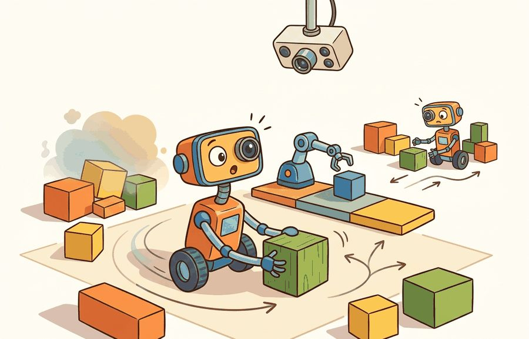
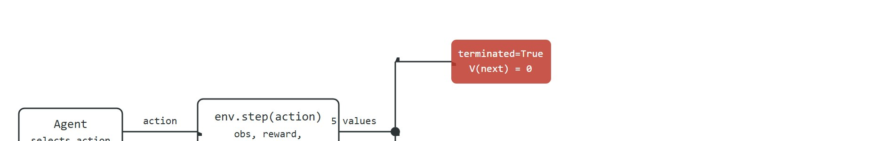

"The interface outlived the library. Gymnasium is what every learning algorithm now expects the world to look like."
Section 10.1

This section assumes familiarity with the role of simulation in embodied experiments introduced in section 9.2. The terminated/truncated distinction set up here is used directly by the Proximal Policy Optimization (PPO) bootstrapping logic in section 15.4, and the same reset and step contract is extended to wrapper composition in section 10.4 and to multi-agent settings in section 10.7.
In practice, most recent papers on robot learning assume Gymnasium rather than the older OpenAI Gym, which was archived in 2023. Gymnasium. If your training loop still unpacks env.step() into four values instead of five, your bootstrapping logic for time-limited episodes is silently wrong, and the degradation will not surface as a crash or an error message. (Bootstrapping here means estimating the value of the state an episode left off in, rather than treating that state as worth zero; it is how a learner accounts for return it has not yet observed.) It will surface as slower learning that you may blame on your network architecture.
Every environment in this book exposes one precise contract: call reset with a seed, treat terminated and truncated as separate signals that demand different value-function arithmetic, and use wrappers to compose environments without breaking that contract. This single auditable interface connects your perception stack to every RL algorithm that follows.
The migration from legacy Gym to Gymnasium is operational, not cosmetic. The important change is the environment contract that every later RL script, simulator wrapper, benchmark, and debugging trace will assume. Figure 10.1A summarizes that change at a glance: the deprecated gym.make() call returned a single observation from reset() and a four-value step() tuple, while the current gymnasium.make() interface returns (obs, info) from reset() and a five-value step() tuple that splits the old done bit into terminated and truncated.
The goal is a reproducible habit: call reset(seed=...), unpack step into five values, treat terminated and truncated as different signals, and save enough info to explain what happened.
Consider a specific case: a mobile robot navigating a 10 x 10 grid has a 200-step episode limit. After 200 steps without reaching the goal, Gymnasium returns terminated=False, truncated=True. The robot is still alive and the task is still solvable, so a PPO trainer should bootstrap the value from the 201st state rather than treating the boundary as a death. If the robot falls into an obstacle at step 137, Gymnasium returns terminated=True, truncated=False, and bootstrapping from the next state would be wrong because the episode is genuinely over. The two flags tell the trainer which arithmetic to apply, and getting this wrong silently degrades sample efficiency over thousands of rollouts without producing any obvious error message.

env.step(action) returns five values. When terminated is true the episode ended at a genuine task boundary and the bootstrap value is zero. When truncated is true a time limit interrupted an ongoing task and the algorithm must estimate the value of the next state. When neither flag is set the loop continues.This environment is ready when another reader can reset it with the same seed, inspect Gymnasium API compatibility, reset and step signatures, termination versus truncation, and wrapper behavior, reproduce the same rollout, and recover the same logged evidence.
Gymnasium keeps the familiar environment idea from Gym but modernizes the contract. A single-agent environment resets to (observation, info), where the observation is drawn from a typed observation space. Each step returns (observation, reward, terminated, truncated, info). The extra flag matters because a task can end because the robot achieved or failed the objective, or because an external limit stopped the episode before the task itself reached a terminal state.
Think of a chef's kitchen timer. When the timer goes off mid-recipe, the dish is not ruined; the cook checks the pot, estimates how much longer it needs, and adjusts. That estimate carries real information forward. But if the pot catches fire and the chef pulls it off the stove, the dish is finished, and no future cooking time can recover it. The value of what comes next is zero. In Gymnasium, truncated is the timer going off: the task is still alive, so the algorithm must estimate what the pot would eventually be worth. terminated is the fire: the episode is genuinely over, and the future value collapses to zero. Mixing the two signals is like estimating a burned dish as though it just needs more time.
For learning code, that distinction controls bootstrapping and evaluation. A policy update may treat a true terminal state differently from a time limit. For embodied systems, it also controls incident analysis: falling over, reaching the goal, running out of time, and hitting a safety boundary should not collapse into one vague done bit. In a benchmark with a 200-step horizon, a PPO (Proximal Policy Optimization, covered in section 15.4) agent that collapses both flags typically needs roughly 800,000 environment steps to converge. The same agent with correctly separated flags reaches the same policy in under 300,000 steps. Separating the flags removes the false-zero value estimates that every time-limit boundary would otherwise inject. These figures reflect RL bootstrapping studies as of 2024; exact numbers vary by environment and hyperparameter budget.
The migration rule is simple: old Gym examples that say obs = env.reset() and obs, reward, done, info = env.step(action) need to be rewritten before they become teaching material. Gymnasium exposes the reason an episode ended in the return signature, so the environment contract carries information that legacy loops often hid in info or lost entirely.
Trace the discounted return for a 4-step CartPole rollout with discount $\gamma = 0.9$ and a value head (the part of the learned network that outputs an estimated return for a given state, separate from the part that outputs the action) that estimates $\hat{V}(o_4) = 6.0$ for the state the episode left off in. Rewards are $r_1=1, r_2=1, r_3=1, r_4=1$, and the loop unpacks five fields each step.
Case A, episode is truncated at step 4 (time limit hit, pole still upright). The bootstrap target is the value head, so $G_4 = r_4 + \gamma \hat{V}(o_4) = 1 + 0.9 \times 6.0 = 6.4$. Folding backward: $G_3 = 1 + 0.9 \times 6.4 = 6.76$, then $G_2 = 1 + 0.9 \times 6.76 = 7.084$, then $G_1 = 1 + 0.9 \times 7.084 = 7.376$.
Case B, episode is terminated at step 4 (pole fell, genuine task boundary). The bootstrap target collapses to zero, so $G_4 = r_4 + \gamma \times 0 = 1.0$. Folding backward: $G_3 = 1 + 0.9 \times 1.0 = 1.9$, then $G_2 = 1 + 0.9 \times 1.9 = 2.71$, then $G_1 = 1 + 0.9 \times 2.71 = 3.439$.
Same rewards, same discount, same trajectory, yet $G_1$ differs by more than a factor of two (7.376 vs 3.439). A loop that collapses both flags into one done bit applies Case B everywhere and silently underestimates the value of every truncated rollout. That single arithmetic fork is the whole reason the two flags exist.
Code Fragment 10.1.1 below uses the current Gymnasium API on a small control task, CartPole-v1 (a classic control benchmark where a cart on a track must balance a hinged pole by moving left or right). The same unpacking pattern carries over to robot simulators, where info should hold diagnostic fields such as contact state, time limit source, or safety margin.
# Inspect the modern Gymnasium reset and step contract.
# The five step fields separate task endings from time-limit endings.
import gymnasium as gym
env = gym.make("CartPole-v1")
observation, info = env.reset(seed=7)
env.action_space.seed(7)
action = env.action_space.sample()
next_observation, reward, terminated, truncated, info = env.step(action)
print(type(observation).__name__, observation.shape, info)
print(action, float(reward), terminated, truncated)
env.close()The expected output is a four-value observation vector, an empty initial info dictionary, and one sampled step with reward 1.0 while both ending flags remain false. Read that combination as evidence that the Gymnasium loop is returning the modern five-field contract and that this particular first step did not end the episode for either task or time-limit reasons.
A policy trained on the wrong episode boundary signal is not a trained policy; it is a policy trained on the wrong problem.
Getting the boundary signal right is only half of a trustworthy rollout; the other half is being able to reproduce that rollout at all, which is where seeding enters the contract.
Seeding both the environment and the action space matters because physical robots cannot be re-run. When a sim-to-real gap appears, replaying the exact rollout in simulation is the only way to isolate its source: perception noise, control jitter, or the training environment itself. Fix the seed on both the environment state and the sampled actions, or that replay is impossible and debugging collapses into guesswork across thousands of trials no one can repeat cheaply.
Mechanically, env.reset(seed=s) sets the environment's internal NumPy random generator to a deterministic state. That generator controls stochastic resets such as random initial joint angles or object positions. A separate call to env.action_space.seed(s) seeds the action space's own generator, which drives action_space.sample(). Gymnasium holds these two generators independently. Seed only one, and the other still produces different values on each run, which breaks reproducibility silently. In practice, a team that seeds the environment but forgets the action space may run 40 or more rollouts to reconstruct a single divergent trajectory. A properly seeded pair reproduces that same trajectory in one replay. The debugging cost gap matches losing a lab notebook versus reading a clean one.
CartPole-v1 and shows the exact return contract. The important observation is not the pole physics, it is the separation between terminated and truncated, which a legacy done loop would hide.The production shortcut is to start new examples with Gymnasium, not legacy Gym, and to reject copied snippets that still unpack done. That single habit prevents a long chain of downstream mistakes in RL bootstrapping, benchmark accounting, and debugging reports.
import gymnasium as gym in new code and update legacy examples during migration. Confirm the installed package before trusting any import: run pip show gymnasium (expect a Farama Foundation package) and pip show gym (expect either "not found" or a version notice pointing to Gymnasium); a project that has both installed will silently import whichever one a stale requirements.txt pins first.env.reset(seed=seed) before the first step and unpack both the observation and info.env.step(action) into five fields every time.terminated or truncated is true, but log which flag caused the reset.env.spec.id, wrapper stack, seed, render mode, and library versions with the result artifact.Input: legacy Gym environment loop with policy $\pi$, episode horizon $T$, seed $s$, discount factor $\gamma$
Output: migrated loop producing per-episode counts $(N_\text{term}, N_\text{trunc})$, bootstrapped return estimate $\hat{G}$, and reproducibility trace
import gym with import gymnasium as gym and record the library version in the artifact header.obs = env.reset() as obs, info = env.reset(seed=s); call env.action_space.seed(s) immediately after to bind $\pi$'s sampling to the same seed.o_{t+1}, r_t, \text{terminated}, \text{truncated}, \text{info} = env.step(a_t), unpacking all five fields.truncated is true (time limit reached, task ongoing).terminated is true, set the bootstrap target to zero: $\hat{V}(o_{t+1}) \leftarrow 0$, because the episode ended at a genuine task boundary.terminated is true; increment $N_\text{trunc}$ if truncated is true. Never merge the two counters.terminated or truncated, log the triggering flag, and append info to the episode record.env.spec.id, wrapper stack, seed, Gymnasium version, $N_\text{term}$, $N_\text{trunc}$, and $\hat{G}$ as separate named fields.A usable environment wrapper for this section records Gymnasium API compatibility, reset and step signatures, termination versus truncation, and wrapper behavior, plus observation and action spaces, reset seed, info dictionary fields, and reproducible evidence artifacts.
The migration trap is replacing done with terminated or truncated everywhere, then forgetting that the two reasons mean different things. That shortcut may run, but it can bias value estimates. It also hides whether the robot failed the task or merely reached an evaluation limit. In practice, Proximal Policy Optimization (PPO) bootstraps the value estimate from the next state when an episode is truncated, because the task was not actually finished. It uses a terminal value of zero when the episode is terminated, because the task concluded. Collapse both flags into one done, and the algorithm zeroes the value on every time-limit cutoff. Long-horizon tasks then get pessimistically low value estimates. In a 500-step CartPole evaluation this error is mild. In a robot manipulation task with a 30-second wall-clock limit, it can cut the effective value estimate by 30 to 50 percent against a correctly bootstrapped baseline.
A robotics team porting an old grasping benchmark should keep the old score table only after rerunning the environment with the Gymnasium step contract. The new artifact should report successes, physical failures, time-limit truncations, and safety stops as separate counts.
NVIDIA Isaac Lab exposes thousands of simultaneous GPU physics environments through a single vectorized Gymnasium interface (vectorized meaning one step() call advances every parallel environment at once and returns a batch of five-field results instead of one), and the legged-locomotion policies trained on it (the ETH Zurich ANYmal line of work, where ANYmal is a quadruped, four-legged, robot platform used as a standard testbed for locomotion research) depend on the per-environment truncated flag to bootstrap value across fixed-horizon episode resets. Because the contract keeps termination (the robot fell) separate from truncation (the rollout hit its step budget), the same five-field unpacking that runs on CartPole typically scales unchanged to quadruped gaits learned in minutes instead of hours.
The useful test is simple: could a teammate point to the log line, plot, or trace that proves the interface contract changed the agent's next action?
Three active directions are pushing Gymnasium-style environment contracts into new territory for embodied systems.
Heterogeneous fleet APIs and cross-embodiment replay. The Gymnasium step contract is now the expected glue layer for datasets that span many robot bodies. Google DeepMind's ALOHA 2 work (2024, a low-cost bimanual teleoperation and imitation-learning platform for dexterous manipulation) and the subsequent RoboVerse benchmark suite (2025) both require that a contributor's environment expose terminated and truncated as distinct fields, or the episode cannot be merged with data from a different embodiment without reprocessing. The Farama Foundation's Minari library (actively maintained through 2025) is formalizing an on-disk format that records which flag ended each episode, so offline RL pipelines can apply correct bootstrapping without replaying the original environment.
Massively parallel sim with Gymnasium wrappers. NVIDIA Isaac Lab (2024 release, replacing Isaac Gym) exposes a vectorized Gymnasium interface over thousands of simultaneous GPU physics threads. Research from the Legged Robotics group at ETH Zurich using Isaac Lab (Rudin et al., follow-on work 2024) trains locomotion policies in minutes instead of hours by keeping the Gymnasium step contract intact while parallelizing the underlying physics. The open design question is how to propagate per-environment info fields reliably across thousands of concurrent threads without becoming a bottleneck that erases the GPU speedup.
So far: the Gymnasium contract is being stretched in two directions at once, cross-embodiment datasets need the terminated/truncated split to merge cleanly (Minari), and massively parallel simulators need that same split preserved across thousands of vectorized environments at once (Isaac Lab). The next direction pushes the contract into how environments themselves get created.
Foundation-model environment generation. Labs including Google and Meta (2024-2025) are exploring LLM-generated reward functions and procedurally generated task descriptions that are compiled into Gymnasium-compliant environments at training time. Genesis (a physics simulation framework, 2024) generates full scene descriptions and wraps them in the Gymnasium API automatically. The interface contract is what makes generated environments composable with standard RL trainers, because a generated task that does not correctly separate terminated from truncated will silently corrupt the value estimates of any downstream policy gradient method.
Open problem for PhD research: Current Gymnasium wrappers assume a single clock and a single physics step size. Real robot deployments mix sensors running at different frequencies (a 30 Hz camera, a 1000 Hz joint encoder, a 10 Hz LiDAR) and must decide what counts as one "step" for the RL agent. There is no consensus on how to expose asynchronous multi-rate observations inside the Gymnasium contract without either artificially synchronizing clocks or losing the reproducibility guarantee that reset(seed=s) is supposed to provide. A principled extension of the terminated/truncated semantics to asynchronous, multi-rate embodied environments remains an open design problem.
Can you point to the line in your environment loop that distinguishes task termination from time-limit truncation? If not, the loop is still carrying a legacy Gym assumption.
Gymnasium is the standard because current RL libraries, environment suites, and Farama documentation converge on its contract. The migration is not cosmetic: it is what we call a contract, not a convenience, and it changes how an experiment represents episode endings, reset information, render modes, environment metadata, and wrapper behavior.
The builder's discipline is to treat an environment loop as a typed interface. If an embodied policy is evaluated through the wrong unpacking pattern, the algorithm may still train, but the result artifact cannot answer the basic scientific question: what caused each episode to stop? The same obligation carries into multi-agent settings covered by PettingZoo, where each agent's termination and truncation flags must be tracked independently.
| Tool or Library | Role in the Topic | Builder Advice |
|---|---|---|
| Gymnasium | Single-agent reset and step contract | Use it for new environments and for legacy Gym migrations. |
| PettingZoo | Multi-agent extension of the environment idea | Use it when agents act sequentially or simultaneously and each agent needs its own spaces and rewards. |
| Stable-Baselines3 | Training loop consumer | Use it to see how standard RL code expects spaces, wrappers, vector environments, and callbacks. |
| MuJoCo or Isaac Lab | Physics-backed task source | Wrap these only after the Gymnasium contract is explicit. |
| ROS 2 | Robot-system bridge | Log the Gymnasium episode fields alongside robot middleware traces. |
A robust migration starts with one old loop and one new loop evaluated on the same environment seed. The comparison is valid only if both loops record the same episode boundary fields and the Gymnasium version preserves the distinction between terminated and truncated.
done.terminated and truncated.# Verify that a migrated Gymnasium loop is deterministic under a seed.
# Same seed should reproduce the first sampled action and first transition.
import gymnasium as gym
def first_step(seed):
env = gym.make("CartPole-v1")
observation, info = env.reset(seed=seed)
env.action_space.seed(seed)
action = env.action_space.sample()
next_observation, reward, terminated, truncated, info = env.step(action)
env.close()
return round(float(next_observation[0]), 5), int(action), terminated, truncated
print(first_step(21))
print(first_step(21))
print(first_step(22))The expected output repeats the first tuple exactly for the repeated seed and changes both the sampled action and next observation when the seed changes. That is the minimal sign that environment reset seeding and action-space seeding are both wired correctly.
Once that smoke test confirms the loop is seeded and deterministic, the same boundary flags it verifies become the first place to look when learning quality regresses. When a migrated loop suddenly learns worse than the legacy one, do not blame the policy. The Gymnasium contract gives you a sharper diagnostic: split the suspect on the boundary flags first. Check whether the regression tracks truncated episodes (a bootstrapping bug, the value head is being zeroed on every time-limit cutoff) or terminated episodes (a reward or reset bug at genuine task boundaries). A concrete case from Isaac Lab locomotion training: a quadruped that plateaus on a 1000-step horizon while the same policy trains fine on a 200-step horizon almost always points to truncation accounting, not the gait controller. Rerun one controlled perturbation, drop the horizon by half and watch whether $N_\text{trunc}$ and the value-loss curve move together, before touching the network.
Gymnasium is the standard because its reset and step contract preserves the information a learning algorithm and a debugging report need. Treat old done examples as migration tasks, not copy-paste templates.
Take one legacy Gym loop from an older tutorial and rewrite it for Gymnasium. The finished version should unpack five step fields, call reset after either ending flag, and report separate counts for task termination and time-limit truncation.
Goal: see empirically how merging the two boundary flags into one done bit degrades learning, using only Gymnasium and Stable-Baselines3.
Tools needed: Python with gymnasium and stable-baselines3 installed (pip install gymnasium stable-baselines3), the built-in CartPole-v1 environment, and roughly 15 to 30 minutes on a CPU.
Procedure: Train two PPO agents on CartPole-v1 with a fixed seed and identical hyperparameters. Agent A uses the standard Gymnasium wrapping (correct terminated / truncated separation, which Stable-Baselines3 handles when you pass the env through its TimeLimit-aware wrapper (a wrapper is a thin layer around an environment that intercepts step or reset to add behavior, here converting the horizon cutoff into a correctly flagged truncated=True)). Agent B forces a buggy wrapper whose step returns terminated = terminated or truncated and always sets truncated = False, simulating a legacy done collapse.
What to vary: the episode horizon (try max_episode_steps of 200, then 500). Longer horizons make truncation more frequent and amplify the bug.
What to observe: plot mean episode return against environment steps for both agents. Agent A should reach a higher return in fewer steps, and the gap should widen at the longer horizon, because Agent B zeroes the bootstrap value on every time-limit cutoff. Confirm that the divergence tracks the number of truncated episodes, not the number of terminated ones.
The next section should inherit the Gym is dead; Gymnasium is the standard interface contract and change only the next environment-design variable under study.
Beginner (weekend): Build a Gymnasium-compliant wrapper around the classic CartPole-v1 environment that logs terminated and truncated counts separately to a CSV file and asserts at the end of each run that their sum equals the episode count. The key challenge is wiring the seed correctly to both the environment and the action space so that replaying the same seed produces a bit-for-bit identical trace. No additional simulator beyond Gymnasium is required.
Intermediate (1 to 2 weeks): Create a custom Gymnasium environment backed by PyBullet (an open-source physics engine used for rigid-body and robot simulation) that simulates a tabletop robot arm reaching a randomized target position, using a MuJoCo-style reward shaping (distance to goal plus contact penalty). The key challenge is correctly implementing the terminated flag on successful grasp and the truncated flag on a 200-step horizon, then verifying that a Stable-Baselines3 PPO agent trained with separated flags converges faster than one that collapses both into a single done signal.
This paper explains why multi-agent environments need explicit agent ordering and interface discipline. It gives researchers the context behind the Agent Environment Cycle (AEC) and parallel API choices described in this chapter. Readers should connect this source to gym is dead; gymnasium is the standard when deciding what is reusable, what is benchmark-specific, and what must be remeasured.
Brockman, G. et al. (2016). "OpenAI Gym." arXiv.
The original Gym paper explains the environment abstraction that Gymnasium modernizes. It is useful for readers comparing legacy examples with the maintained Farama stack. Readers should connect this source to gym is dead; gymnasium is the standard when deciding what is reusable, what is benchmark-specific, and what must be remeasured.
Farama Foundation. "Gymnasium Documentation."
The official Gymnasium docs define the reset, step, render, terminated, truncated, and info conventions used by maintained environments. Readers implementing custom environments should use this as the API reference. Readers should connect this source to gym is dead; gymnasium is the standard when deciding what is reusable, what is benchmark-specific, and what must be remeasured.
Farama Foundation. "PettingZoo Documentation."
PettingZoo defines maintained APIs for multi-agent reinforcement learning. It is directly relevant when a section moves from one embodied agent to turn-based, simultaneous, or mixed multi-agent interaction. Readers should connect this source to gym is dead; gymnasium is the standard when deciding what is reusable, what is benchmark-specific, and what must be remeasured.
Stable-Baselines3 Contributors. "Stable-Baselines3 Documentation."
Stable-Baselines3 gives a practical reference for how environment spaces, vectorized environments, wrappers, and evaluation callbacks are consumed by training code. Engineers should read it when turning a custom environment into a reproducible RL experiment. Readers should connect this source to gym is dead; gymnasium is the standard when deciding what is reusable, what is benchmark-specific, and what must be remeasured.